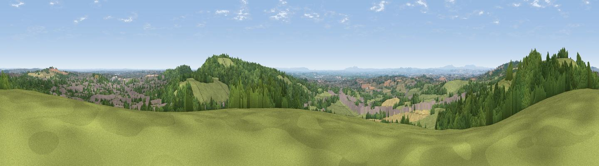

Holywell Hill
#5834 in England · top 5% of its area beats it · near RuberyWhere it is
The exact computed spot (SO 97576 76975). Click the marker for map links.
The view, rendered

A 360° render of this exact spot computed from the terrain model, tree cover and land cover — summer colours, afternoon light, calibrated against photographs of famous viewpoints. Real trees, hedges and buildings will differ in detail.
The panorama
Grey silhouette: terrain skyline in each direction (720 bearings, Earth curvature and refraction included). Dashed green: skyline with trees (+15 m) and buildings (+8 m) as obstacles. Blue strip: how far the ground is visible on each bearing.
Where the view opens
Wedge length = distance to the farthest visible ground on that bearing (vegetation-aware). Rings at 10, 25 and 50 km.
What fills the view
40% grassland · 39% woodland · 15% built-up · 6% cropland
Angular shares of the visible panorama (visual magnitude), not map area. Landscape diversity 0.52 (0–1 Shannon).
Key numbers
More beautiful places nearby
The staircase of upgrades: each row has a higher view potential than everything closer. Driving times are estimates from straight-line distance, calibrated against real road routing — check an actual route before setting out.
| Place | Direction | Drive | Score |
|---|---|---|---|
| Windmill Hill | NNW · 1 km | ~3 min | 73.2 |
| Viewpoint near Clent | NW · 5 km | ~12 min | 73.8 |
| Viewpoint near Clent | NW · 6 km | ~12 min | 74.3 |
| Viewpoint near Abberley | WSW · 23 km | ~38 min | 77.5 |
| Viewpoint near Abberley | WSW · 24 km | ~39 min | 78.1 |
| Abberley Hill | WSW · 24 km | ~40 min | 80.4 |
| Viewpoint near Great Witley | WSW · 26 km | ~42 min | 83.4 |
| North Hill | SW · 37 km | ~56 min | 86.8 |
52.39079, -2.03705 · source: osm peak · position refined by local search. Computed location — check access rights before visiting.